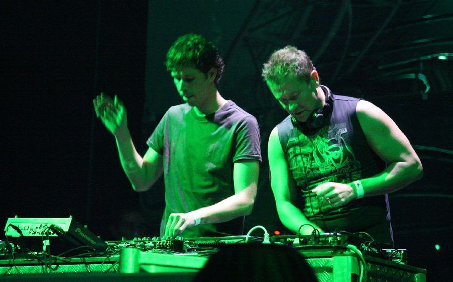

Cosmic Gate: Working hard to blow your mind


.jpg){kind=link}
If you want a framework to understand the enduring success of Germany’s Cosmic Gate as they prepare for the their Australian tour with Godskitchen over the next two weekends, then look no further than their remix of fellow trance heavy John O’Callaghan’s Find Yourself, for evidence of why the DJ/producer duo is still kicking arena-sized goals in 2009.
While the original was a fairly passable pop-trance crossover tune, once Cosmic Gate had given it their efficient working over it was transformed into something else entirely. Opening with a rumbling bassline and distorted vocals woven amongst the techno rhythms, the remix is a club-ready affair until in reaches the breakdown; where it’s stripped right back to the simple guitar strumming and female vocals of Callaghan’s original tune. “Drawn into the backdrop here, You could fade, you could fade away/ Bright lights on a starless night, Burn a hole in the dying day.” The all of a sudden it’s ripped open by a euphoric synth that pitches up to the sky like a rocket, kicking things overdrive for a massive buildup. Effectively they’ve transformed a fairly vanilla anthem into something that’s a little more edgy, a lot more unpredictable but that is still capable of getting sweaty punters reaching for those lasers. It’s a remix that effortlessly outstrips the original and it’s been working its magic in the clubs and arenas all year, and we’ve seen the partnership of Nic Chagall and Stefan Bossems give that same superior treatment to other top-ranking dance artists recently like Armin van Buuren and Paul van Dyk. You’d almost feel a touch embarrassed being so outclassed by the hired help, wouldn’t you? Yet more than ever before, Cosmic Gate are inching closer to the titans that they’re remixing, and their busy tour schedule during the European summer was evidence enough of this.
“We’re a little tired after the weekend, but good,” Cosmic Gate told ITM back in July, when the pair were moving into the thick of the European party season. “We started on Wednesday in Spain, then onto Cairo in Egypt, back to London after that and then on Saturday we were in Poland and Moscow.” The thought of just how much travelling and touring ahead of them elicits a chuckle at the insanity of it all. “The summer is crazy, we’re coming up to close to sixty gigs from June to September, so every second day there is a gig,” said Nic, exhaling with an uncomfortable laugh at the mere thought of it.
Somehow they summoned the energy amongst all that to get back in the studio and lay down a few more of their trademark remixes, reaching back into the well of inspiration after putting the finishing touches on their Sign of the Times album at the beginning of the year. But far from pumping out the predictable work, they’ve remained focused on progressing their sound, keeping things broadly within the trance genre while still innovating and pushing things forward. What’s the secret?
“Maybe the secret is to have our eyes and ears open, but not only in the trance scene. We find it very important to be open-minded to other types of electronic music, and the influences often come from there.” This is another constant for Cosmic Gate – working in influences from other styles like techno, house and electro. “When we go into the studio we always try to put in something new, and there’s also the choice to not be doing the same thing that other people in the scene may be doing. To do what we like instead of following trends, and then hopefully be setting the trends with what we do. Ultimately though, we always just produce what we feel and we don’t really think about it too much. We just enjoy it, and hopefully the people like the results.”
They’re so much on the cutting edge that it’s easy to forget Cosmic Gate have been producing music for a massive ten years – which is an eternity in dance music. It’s the very same act who produced the harder, faster and rougher anthems like Firewire and Exploration of Space at the beginning of the decade. Five albums later, and their sound has taken on infinite layers of polish and sophistication, with Nic and Stefan evolving their approach while remaining connected with what’s going on in the scene, staying ahead of the bell curve a lot of the time. If the digital distribution site Beatport has become the barometer through which we judge the success of a dance artist, then scanning through Cosmic Gate’s profile on the site gives an indication of just how prolific they’ve been – there’s 26 pages of releases, and it doesn’t even span their entire career. There’s a touch of German efficiency here; it’s a deadly serious approach that yields results. They’re a friendly duo to chat to, but these stoic national characteristics still come out in conversation every now and then in a moment of seriousness. “Once again, we did not understand you,” I was informed matter-of-factly at one point when the line broke up for a second.
But while it’s one thing to consistently nail club anthems, the other Holy Grail for dance producers is delivering the perfect artist album that works just as well on your home stereo as a booming arena. Nic says this is what was motivating them with Sign of the Times. “This time we wanted to produce more ‘songs’ and vocal based tracks, not just club anthems,” he said. “I think in the past we’ve done a lot of club tracks, and we didn’t need to prove that anymore. So we really wanted to have an album with a lot of vocals that you can listen to in your car or in your home stereo, because that’s what an album is for we think. Not just tracks to play in the club, sure we did some of those, but you also need to have a whole album to listen to at home.”
The response from fans has been a touch mixed. There’s always the danger when you’re trying to steer away a little from what you’re know that you’ll feel some resistance, and in this case, the heavy use of vocalists on Sign of the Times was derided by some as ‘cheesy’, to the point where the buzz around Cosmic Gate’s visit to Australia is a little less than what you’d otherwise expect. But these criticisms miss the fact that while there may be a lot more vocals on Sign of the Times, the musical approach is still every bit as progressive as we’ve come to expect from the pair; even if it didn’t hit the mark as a cohesive whole as much as we would have liked.
Cosmic Gate will be working hard to blow our minds over the next two weekends as part of the annual Godskitchen tour, a banner they’ve visited under several times before alongside massive names like Above & Beyond and Eddie Halliwell. This time though they’ll be competing with something else entirely for punter attention – the audio-visual spectacular known as the ‘Boombox’. Footage emerged from a Godskitchen event in Ukraine back in March showing the massive setup, shaped in memory of the iconic tape players from the 80s, stretching from one end of the arena to the other with spectacular projected visuals, bathing the crowd in light and the DJ booth placed right smack in the middle. “Yeah, I’ve seen the pictures,” Nic says. “But we also want to get a surprise from the Boombox, and to avoid finding too much about it, because we want to be blown away by it too. It should be pretty awesome.”
Cosmic Gate’s Sign of the Times is out now on 405 Recordings, check them out on the Godskitchen Boombox Tour 2009:
Friday October 2nd: The Met, Brisbane
Sunday October 4th: Hordern Pavilion, Sydney
Friday October 9th: Metro City, Perth
Saturday October 10th: Hisense Arena, Melbourne
Check out our Godskitchen Festival Page for more info on the tour, and check out a video of the Boombox firing on all cylinders below..